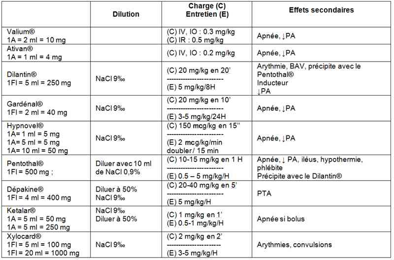
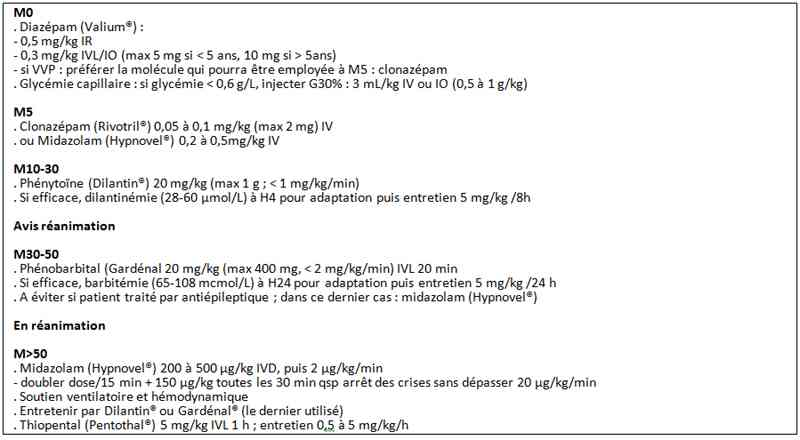

Bienvenue Sur Medical Education
Convulsions de l'enfant
EnfantSpécialité : neurologie / pédiatrie / symptômes / traumatologie /
Points importants
-
Motif fréquent d’hospitalisation chez l’enfant (1 enfant sur 20 fait une crise convulsive avant l’âge de 5 ans)
-
La cause la plus fréquente des convulsions généralisées entre 6 mois et 5 ans est l’hyperthermie (crises convulsives fébriles)
-
L’état de mal épileptique est l’une des plus fréquentes urgences neurologiques de l’enfant. La mortalité et la morbidité sont importantes et augmentent de façon significative en cas d’état de mal épileptique réfractaire
-
Chaque âge a ses syndromes épileptiques (par ex. syndrome de West chez le nourrisson). Les pseudo-crises sont aussi fréquemment observées. L’interrogatoire des parents est fondamental.
Présentation clinique / CIMU
SIGNES FONCTIONNELS
Présentation clinique / CIMU
SIGNES FONCTIONNELS
Généraux
- Altération de la conscience (de la perte de contact lors des crises focales au coma en phase postcritique)
Spécifiques
-
Symptomatologie en rapport avec la région du cerveau intéressée par la décharge anormale. Le premier symptôme correspond au point de départ de la décharge, puis la sémiologie clinique critique s'enrichit et se modifie selon son organisation temporo-spatiale. Les signes peuvent être :
- des mouvements anormaux ou une paralysie (muscles d'un membre, de la tête…) – aires motrices
- des troubles de la sensibilité (paresthésies) – aires sensitives
- des hallucinations sensorielles (visuelles, auditives, gustatives) - aires visuelles, aire auditive, aire gustative
-
des troubles d'apparence psychiatrique :
- dysphasie (trouble de l'expression ou de la compréhension du langage) – aires du language
- métamorphopsie (sensation de distorsion des objets) – aires visuelles
-
des troubles du système nerveux végétatif :
- tachycardie, HoTA, vomissements, diarrhées, hypersalivation, gastralgies– lobe temporale et région lymbique
- Habituellement on observe des mouvements anormaux (rythmiques, non bloqués par l’examinateur)
- Dans certains cas, les crises partielles peuvent se généraliser dans un second temps par extension à tout l'encéphale
- Association avec perte de contact en cas de crises généralisées mais aussi de crises focales complexes
CONTEXTE
Terrain
- Pathologies neurologiques ou génétiques préexistantes
- Pathologie psychiatrique (autisme)
Traitement usuel
- Anticonvulsivants
Antécédents
- Souffrance fœtale aiguë
- Pathologie chronique du SNC
- Epilepsie dans la famille ou crises convulsives fébriles dans la petite enfance
Facteurs de risque
- Contexte traumatique
- Age < 12 mois
- Etat de mal convulsif (durée > 15 min)
- Convulsions partielles (évoquent un mécanisme lésionnel)
- Convulsions répétées ou subintrantes (équivalentes à un EMC)
- Déficit postcritique persistant (suspecter un AVC)
- Convulsions brachio-faciales fébriles (suspecter une encéphalite herpétique)
Circonstances de survenue
- Début
- Déroulement
- Fin
- Durée
- Phase postcritique
- Fièvre
- Traumatisme (question principale : convulsion et chute entrainant un TC ou chute entrainant un TC et une convulsion)
EXAMEN CLINIQUE
- Examen complet
- Focalisé à la recherche de déficit neurologique
- Mesure du périmètre crânien
- Evaluation de la fontanelle antérieure
EXAMENS PARACLINIQUES SIMPLES
- PA, FC, FR, SpO2, T°, poids
- Glycémie capillaire si pas de récupération ou EMC
CIMU
- Tri 1(EMC)
- Tri 4 (convulsions fébriles simples)
Signes paracliniques
BIOLOGIQUES
-
Aucun examen n’est indiqué en cas de convulsions fébriles simples avec examen clinique normal (voir algorithme), hormis ceux qui sont nécessaires à la recherche d’un foyer infectieux
-
Bilan en urgence selon le contexte : glycémie, ionogramme, calcémie, cétonurie, GDS, dosage HbCO
-
Dosage des médicaments antiépileptiques chez les enfants traités
-
Recherche de toxiques (selon contexte)
-
PL au moindre doute de méningite
IMAGERIE
Scanner
-
Pour identifier :
- une lésion expansive
- une hydrocéphalie aiguë
- ou un œdème cérébral
IRM
- Idéalement d’emblée
- Permet de visualiser des lésions dysplasiques
EEG
- Diagnostic syndromique
- Etiologique par rapport aux pseudo-crises
- Chez l’enfant obtenir toujours veille et sommeil
Diagnostic étiologique
-
Une classification plus complète est disponible sur le site de l’International League Against Epilepsy (ILAE)
EPILEPSIE GENERALISEE IDIOPATHIQUE
Epilepsie absence "petit mal"
- Enfant ou adolescent
- Absences typiques ou atypiques (phénomènes moteurs associés)
- EEG : pointes-ondes à 3 c/s (hyperpnée ++)
Epilepsie généralisée "grand mal"
- Tout âge (très rare chez le nourrisson)
- Crises tonico-cloniques
- EEG : pointes-ondes généralisées
Epilepsie myoclonique juvénile
- Habituellement à l’adolescence
- Crises : myoclonies +++: au réveil «maladresse du petit déjeuner»
- Tonico-clonique : souvent suite à une salve de myoclonies
- Absences : plus rares
-
Facteurs déclenchants :
- manque de sommeil
- stimulation lumineuse
- EEG : décharges de polypointes-ondes, bilatérales et symétriques
Epilepsie photosensible
- Crise tonico-clonique devant la télévision ou l'ordinateur
- EEG : pointes-ondes à la SLI
EPILEPSIE GENERALISEE, SYMPTOMATIQUE, CRYPTOGENIQUE
Syndrome de West
- Age < 1 an
- Spasmes en flexion ou extension
- Régression psychomotrice
- EEG: hypsarythmie
Syndrome Lennox-Gastaut
- Age > 2 ans
- Crises atoniques + absences atypiques + crises toniques
- Retard psychomoteur
- Trouble du comportement
- EEG : tracé de fond lent + pointes-ondes lentes (variante de myoclonie de DOOSE : myoclonies ++, chutes ++)
EPILEPSIE FOCALISEE (PARTIELLE) IDIOPATHIQUE
Epilepsie à paroxysmes rolandiques (EPR)
- Début entre 5 et 10 ans (15-25% des épilepsies en pédiatrie)
- Épilepsie bénigne
- Crises oro-faciales ou hémi-corporelles, survenant en fin de nuit ou au réveil, rarement secondairement généralisées
- EEG : pointes rolandiques tantôt droites, tantôt gauches
EPILEPSIE PARTIELLE OU GENERALISEE DE NATURE INDETERMINEE
Epilepsie avec pointes-ondes continues du sommeil (POCS)
- Enfant
- Crises partielles ou généralisées rares avec apparition de troubles des fonctions supérieures (langage, mémoire...)
- EEG : POCS (enregistrer le sommeil +++)
Syndrome de Landau-Kleffner
- Enfant
- Aphasie acquise plus ou moins crises
- EEG : pointes bi-temporales ou POCS (enregistrer le sommeil +++)
ÉTAT DE MAL CONVULSIF (EMC) TONICO-CLONIQUE
- Toute crise convulsive tonico-clonique qui persiste inchangée depuis plus de 15 minutes (délais non consensuel)
ÉTAT DE MAL CONVULSIF TONICO-CLONIQUE REFRACTAIRE
- Tout état de mal convulsif tonico-clonique qui persiste après un traitement de première intention comportant l’association d’une benzodiazépine et de phénytoïne ou de phénobarbital
Diagnostic différentiel
-
Syncope – malaise vagal
-
Syndrome de Sandifer (association avec RGO)
-
Spasme du sanglot
-
Myoclonies d’endormissements
-
Terreur nocturne
-
Somnambulisme
-
Auto-stimulation
-
Migraine
-
Psychogène
-
Autres mouvements anormaux (chorée, dystonie, dyskinésie, tics)
Traitement
TRAITEMENT PREHOSPITALIER / INTRAHOSPITALIER
Traitement
TRAITEMENT PREHOSPITALIER / INTRAHOSPITALIER
Stabilisation initiale
- Pas de traitement si la crise a cédé
-
Prise en charge de la convulsion en cours et de l’état de mal (voir aussi algorithme pour les médicaments antiépileptiques) :
-
dégager les voies aériennes :
- décubitus dorsal
- élévation du maxillaire inférieur
- aspiration naso-pharyngée
- O2 systématique pour obtenir une SpO2 > 95% : lunettes, masque ou insufflateur manuel
- oxygénation à fort débit pour intoxication au CO (indication d’oxygénothérapie hyperbare, à discuter avec le médecin du caisson, si signes neurologiques ou HbCO > 15%)
- ventiler à l’insufflateur manuel + masque si la ventilation spontanée est inefficace ou si la SpO2 reste < 95% en dépit de l’oxygénothérapie instituée
- mettre en place une sonde naso-gastrique de bon calibre et vider l’estomac
-
dégager les voies aériennes :
- Si le patient ne dispose pas d’un abord veineux, faire au plus 3 tentatives d’abord veineux périphérique. En cas d’échec de ces tentatives, mettre en place sans délai une aiguille intra-osseuse.
- Si glycémie capillaire < 0,6 g/L, administrer du G10% : 3 mL/kg IV ou IO (0,5 à 1 g/kg)
- Remplissage vasculaire (NaCl 0,9% 20 mL/kg IV ou IO en 10 ou 20 min) si signes cliniques d’HoTA malgré SpO2 > 95%
- Si HTA, respecter (= hypercapnie ± HTIC) pour maintenir une pression de perfusion cérébrale suffisante; si persistance ultérieure : rechercher une cause organique.
- Chez le patient avec une épilepsie connue et traitée, il ne faudra pas oublier de maintenir le traitement de fond à administrer par la sonde naso-gastrique
Suivi du traitement
-
Antibiothérapie probabiliste si méningite
- Acyclovir si suspicion d’encéphalite herpétique. Acyclovir (Zovirax®) : 500 mg/m2 toutes les 8 h IVL.
-
Contrôle de la fièvre :
- paracétamol 15 mg/kg/6h
-
moyens physiques contre la fièvre (action limitée dans le temps) :
- ne pas trop couvrir l’enfant
- aérer la pièce
- le traditionnel bain à 2 °C en dessous de la température corporelle est relégué au second plan
- Perfusion sur la base d’une hydratation normale pour l’âge, (B27 ou Lactate Ringer)
MEDICAMENTS
- Traitement médicamenteux des convulsions de l’enfant
 _766 Tableau Traitement médicamenteux des convulsions de l'enfant
Surveillance
CLINIQUE
-
Glasgow, FC, FR, PA, SpO2 /h initialement, ensuite toutes les 3 heures quand patient stabilisé
-
Pouls périphériques, extrémités, temps de recoloration capillaire/h initialement, ensuite toutes les 3 heures quand patient stabilisé
-
T°/3 h
-
Apparition d’un purpura
PARACLINIQUE
-
EEG
Devenir / orientation
CRITERES D’ADMISSION
Devenir / orientation
CRITERES D’ADMISSION
En neurologie pédiatrique
- Souvent non nécessaire
- Indispensable de discuter avec le neurologue pédiatre sur les modalités du suivi
-
Hospitalisation nécessaire si :
- crises convulsives répétitives
- signes déficitaires persistants
- diagnostic étiologique
En réanimation si
- Etat de mal convulsif
-
Origine lésionnelle à risque vital :
- traumatisme sévère
- bébé secoué
- infection grave
- AVC
CRITERES DE SORTIE
- Glasgow 15 avec examen neurologique normal
- Parents ayant compris la mise en PLS et l’utilisation de diazépam intrarectal
- Avis neurologique si décision de traitement de fond (organisation du suivi)
ORDONNANCE DE SORTIE
-
Diazépam (Valium®) IR 0,5 mg/kg, si crise convulsive > 5 min (2mL = 10 mg, dose max 10 mg)
- mettre l'enfant sur le côté, injecter dans l'anus la dose de Valium avec une seringue sans aiguille, maintenir les fesses serrées une minute
- Poursuite du traitement étiologique (ex : antipyrétiques…)
- Poursuite du traitement antiépileptique éventuellement commencé pour les enfants hospitalisés
RECOMMANDATIONS DE SORTIE
Conduite à tenir en cas de récidive
- Éviter qu’il ne se blesse (ne pas bouger l’enfant)
- PLS
- Ne rien mettre dans sa bouche
- Ne pas empêcher les mouvements
- Description de la crise
- Après 5 min : diazépam en IR
- Appel des secours
Mécanisme / description
-
Plusieurs gènes responsables de syndromes épileptiques sont identifiés et ils codent généralement pour des canaux ioniques. Leur altération favorise l’hyperexcitabilité neuronale qui provoque une augmentation de sensibilité des récepteurs NMDA de la voie glutamatergique.
-
Les phénomènes concourant à l’hyperexcitabilité s’auto-entretiennent alors que les systèmes d’inhibition sont altérés ou s’altèrent (troubles ioniques, fièvre…).
-
Il faut distinguer :
-
crise d'épilepsie: manifestation clinique résultant d'une décharge neuronale hypersynchrone qu'elle soit motrice (convulsion) ou non.
-
épilepsie : maladie chronique caractérisée par la répétition des crises d'épilepsie (1 crise unique ne constitue pas une épilepsie !)
-
crise d'épilepsie occasionnelle : crise survenant chez un sujet non épileptique à l'occasion d'un facteur déclenchant (sans lésion cérébrale) comme la fièvre, un traumatisme crânien, un trouble ionique (hypoglycémie, hypocalcémie, hypo ou hypernatrémie).
-
état de mal épileptique : crise d'épilepsie durant au moins 30 min ou crises survenant en séries sans récupération de conscience entre les crises (risque de séquelles neurologiques).
Algorithme
-
Prise en charge convulsion en cours
- crise d'épilepsie: manifestation clinique résultant d'une décharge neuronale hypersynchrone qu'elle soit motrice (convulsion) ou non.
- épilepsie : maladie chronique caractérisée par la répétition des crises d'épilepsie (1 crise unique ne constitue pas une épilepsie !)
- crise d'épilepsie occasionnelle : crise survenant chez un sujet non épileptique à l'occasion d'un facteur déclenchant (sans lésion cérébrale) comme la fièvre, un traumatisme crânien, un trouble ionique (hypoglycémie, hypocalcémie, hypo ou hypernatrémie).
- état de mal épileptique : crise d'épilepsie durant au moins 30 min ou crises survenant en séries sans récupération de conscience entre les crises (risque de séquelles neurologiques).
Algorithme
- Prise en charge convulsion en cours
 _767 Tableau Prise en charge convulsion en cours
Bibliographie
-
Claes LR, Ceulemans B, Audenaert D, Deprez L, Jansen A, Hasaerts D, et al. De novo KCNQ2 mutations in patients with benign neonatal seizures. Neurology. Dec 14 2004;63(11):2155-8.
-
Dravet C, Bureau M. Benign myoclonic epilepsy in infancy. Adv Neurol. 2005;95:127-37.
-
Darra F, Fiorini E, Zoccante L, Mastella L, Torniero C, Cortese S, et al. Benign myoclonic epilepsy in infancy (BMEI): a longitudinal electroclinical study of 22 cases. Epilepsia. 2006;47 Suppl 5:31-5.
-
Caplan R, Siddarth P, Stahl L, Lanphier E, Vona P, Gurbani S. Childhood absence epilepsy: behavioral, cognitive, and linguistic comorbidities. Epilepsia. Nov 2008;49(11):1838-46.
-
Posner EB, Mohamed K, Marson AG. Ethosuximide, sodium valproate or lamotrigine for absence seizures in children and adolescents. Cochrane Database Syst Rev. 2005;CD003032.
-
Di Bonaventura C, Fattouch J, Mari F, et al. Clinical experience with levetiracetam in idiopathic generalized epilepsy according to different syndrome subtypes. Epileptic Disord. Sep 2005;7(3):231-5.
-
Glauser TA, Cnaan A, Shinnar S, Hirtz DG, Dlugos D, Masur D, et al. Ethosuximide, valproic acid, and lamotrigine in childhood absence epilepsy. N Engl J Med. Mar 4 2010;362(9):790-9.
-
Holsti M, Dudley N, Schunk J, Adelgais K, Greenberg R, Olsen C, Healy A, Firth S, Filloux F. Intranasal midazolam vs rectal diazepam for the home treatment of acute seizures in pediatric patients with epilepsy. Arch Pediatr Adolesc Med. 2010 Aug;164(8):747-53.
-
Geerts A, Arts WF, Stroink H, Peeters E, Brouwer O, Peters B, Laan L, van Donselaar C. Course and outcome of childhood epilepsy: a 15-year follow-up of the Dutch Study of Epilepsy in Childhood. Epilepsia. 2010 Jul;51(7):1189-97.
-
Carneiro M, Meyer P, Rivier F. Convulsions of infants and children. Rev Prat. 2010 Apr 20;60(4):543-50.
-
Sheth RD, Abram HS. Absence epilepsy with focal clinical and electrographic seizures. Semin Pediatr Neurol. 2010 Mar;17(1):39-43.
-
Chen CY, Chang YJ, Wu HP.New-onset seizures in pediatric emergency. Pediatr Neonatol. 2010 Apr;51(2):103-11.
Auteur(s) : Luigi TITOMANLIO, Irène D'AGOSTINO